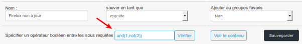

Groupe de machines¶
Cette section concerne la partie Groupe de machines de l’outil Pulse.
Les groupes de machines permettent de constituer un ensemble de machines. Il existe trois types de groupes :
- Les groupes statiques ;
- Les groupes dynamiques ;
- Les groupes créés depuis un import.
Groupe statique¶
Dans le groupe statique, la sélection des machines membres de ce groupe est manuelle.

Il est possible d’éditer un groupe statique pour ajouter ou supprimer d’autres machines.
Il suffit d’utiliser les flèches pour ajouter ou supprimer les machines du groupe.
Groupe dynamique¶
Un groupe dynamique est un groupe basé sur une requête sur la base d’inventaire de machines en fonction de critère(s).
Il est possible de combiner plusieurs critères avec des opérateurs booléens.
Le résultat est stocké sous forme de requête (dynamique) ou de résultat (figé à l’instant T).

Trois modules sont disponibles pour la création de groupe dynamique :
- Module GLPI : permet d’utiliser les critères d’inventaire des machines ;
- Module xmppmaster : permet d’utiliser l’Active Directory ou LDAP ;
- Module dyngroup : permet d’utiliser des groupes dynamiques existants.
Sauf cas particulier, il faut toujours choisir « GLPI ». En effet, la requête peut être effectuée sur différents champs, voir ci-dessous :

Par exemple, utiliser le champ « Entité » se présente comme ceci :

L’auto-complétion propose les valeurs existantes après avoir renseigné trois caractères.
Exemple concret de groupe dynamique¶
Pour notre exemple, nous allons créer un groupe de machine sur lesquels une version obsolète de Firefox est présente.
Pour commencer, il faut ajouter un critère « Logiciel » avec la valeur « Mozilla Firefox * » pour tester la présence de Firefox (le caractère « * » peut être utilisé pour compléter le critère par n’importe quel caractère et donc trouver toutes les versions de Firefox);
Ensuite, il faut cliquer sur « glpi » à nouveau pour ajouter un second critère ;
Choisir « Version » puis renseigner « Mozilla Firefox * » puis « 47.0 » (ce critère sera inversé, plus d’informations juste après)
(Le critère « Version » seul retournerait les machines avec Firefox obsolète OU n’ayant pas Firefox du tout)

Il faut s’inspirer de la liste d’auto-complétions pour adapter au mieux le critère de recherche :
Par exemple, Firefox apparaît avec une entrée pour chaque version, d’où l’utilisation de « * ».

Une fois la requête terminée, il faut la sauvegarder.
Il est donc possible de sauvegarder en tant que « requête » (dynamique) ou en tant que « résultat » (requête à l’instant T).
Si on ajoute le groupe aux groupes favoris, on peut retrouver le groupe dans le menu de gauche, onglet « Groupes favoris ».
Opérateur booléen :¶
Les opérateurs disponibles sont AND, OR, NOT ainsi que les ( ).
AND : Permet d’associer les requêtes : AND(1,2)
NOT : Permet d’inverser le résultat de la seconde requête : NOT(2)
OR : Permet d’utiliser l’une ou l’autre requête : OR(1,2)
Pour notre requête, nous devons combiner les deux conditions AND et NOT : AND(1,NOT(2))
Cela revient à demander les machines ayant le logiciel « Mozilla Firefox * » installé ET dont la version de
« Mozilla Firefox * » N’EST PAS « 47.0 »
Vous pouvez vérifier vos opérateurs en cliquant sur le bouton « Vérifier »
Il est aussi possible de visualiser le contenu du groupe avant de valider en cliquant sur le bouton « Voir le contenu »